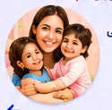
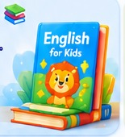

معرفی معلم 💗
سلام! من معلم زبان انگلیسی هستم و با بیش از ۴ سال تجربه در آموزش به کودکان، به آنها کمک میکنم تا با اعتماد به نفس صحبت کنند، بخوانند و بنویسند.
- دارای سبک آموزش زبان انگلیسی
- مدرس خلاق و بازیمحور
- علاقهمند به کار با کودکان
من معلم زبان انگلیسی کودکان هستم و با روشهای خلاقانه
و بازیمحور، یادگیری را برای کودکان لذتبخش میکنم.
سلام! من معلم زبان انگلیسی هستم و با بیش از ۴ سال تجربه در آموزش به کودکان، به آنها کمک میکنم تا با اعتماد به نفس صحبت کنند، بخوانند و بنویسند.
تألیف کتابهای آموزشی
زبان انگلیسی برای کودکان
برگزاری دورههای آموزشی موفق
با رضایت بالای والدین زبانآموزان
بیش از ۴ سال تجربه
در آموزش زبان به کودکان

خانم معلم، با صبر و حوصله و روش عالی فرزندم عاشق کلاسهای شماست.
– مریم محمدی
When I was a child, I didn't enjoy learning English because it seemed difficult and boring. As I grew older, I discovered that learning English can be easy and fun when we learn in the right way.
That's why I wanted to teach my children, Kian and Diana, through games, drawing, crafts, and playdough—things children love. Those happy moments inspired me to create the Tatitalk book series, and now I'm excited to share it with you.
I hope you enjoy drawing, coloring, playing, and learning English with Kian and Diana.
With love,
Parvin Mohammadi 💗
سلام دوستهای کوچولوی عزیزم!
وقتی همسن شما بودم، یاد گرفتن زبان انگلیسی را دوست نداشتم، چون به نظرم سخت و خستهکننده بود. اما وقتی بزرگتر شدم، فهمیدم اگر زبان را به روش درست یاد بگیریم، میتواند ساده، شیرین و لذتبخش باشد.
به همین دلیل تصمیم گرفتم زبان انگلیسی را با بازی، نقاشی، کاردستی و خمیربازی؛ یعنی همان چیزهایی که بچهها دوست دارند، به فرزندانم کیان و دیانا یاد بدهم. همان لحظههای شاد، الهامبخش مجموعه کتابهای تاتیتاک شد و حالا خوشحالم که آن را با شما هم به اشتراک میگذارم.
امیدوارم در کنار کیان و دیانا، از نقاشی کشیدن، رنگ کردن، بازی کردن و یاد گرفتن زبان انگلیسی لذت ببرید.
با عشق